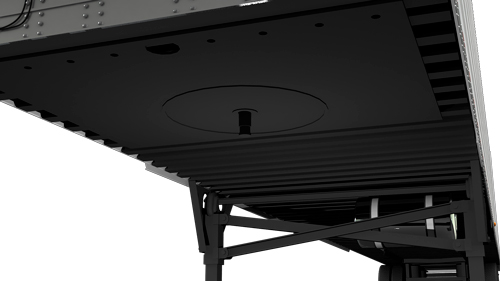

|  |
Características
-
Completamente inmerso en pintura anticorrosiva.
-
Canales formados de acero de alta resistencia
-
Placa del perno rey de acero de alta resistencia
Ventajas
-
Protección a la corrosión
-
Reducción significativa de la inclinación lateral y otros daños relacionados.
-
Balance optimo entre peso y fuerza.
|